产品图
Medicube PDRN Pink Caffeine Collagen Eye Patch

hero 已切成产品 packshot，避免顶部继续像视频缩略图。
hero 已切成产品 packshot，避免顶部继续像视频缩略图。
前几秒要尽快证明 3 件事：它在解决哪个眼周问题、它为什么不像普通湿贴片、应该怎么用。
这是带 PDRN、collagen、caffeine 的 hydrogel eye patch。成分会让它看起来更像正经眼周护理，但真正让人下单的，还是贴的位置很明确、质地很润、贴上去不乱滑、早上很容易塞进 depuff routine，再加上 60 片更显得划算。
会买的人，通常已经知道自己眼下有问题，正在找一个更快、更省事、看起来更靠谱的办法。
我现在还没有接到 Medicube 的逐秒 CTR / CTOR 后台导出，所以这里不是“哪一秒点击最高”的硬对照板。这里先做的是 Top 15 spoken winners 里反复出现的前段动作。你一眼先看这些动作，就更容易明白大家到底在重复拍什么。
这一下会让人马上觉得它不是普通眼贴，而是精华很多、看起来更值钱的那种。
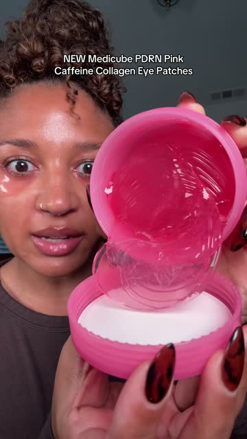
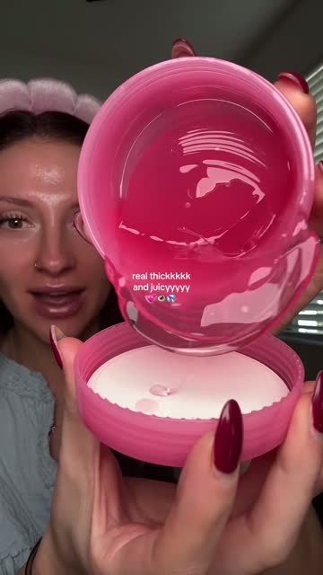
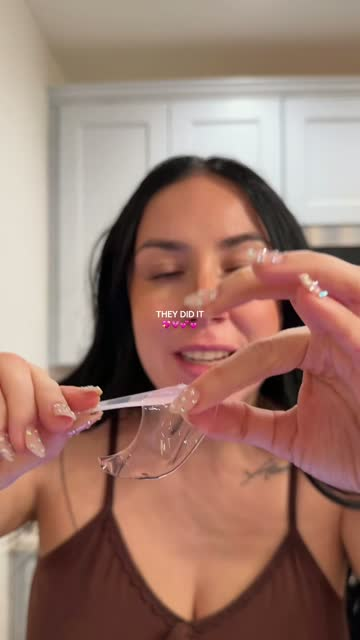
眉上、上眼皮、法令纹这些位置一出来，人很快就知道这不是普通贴片，而是一个更具体的用法。
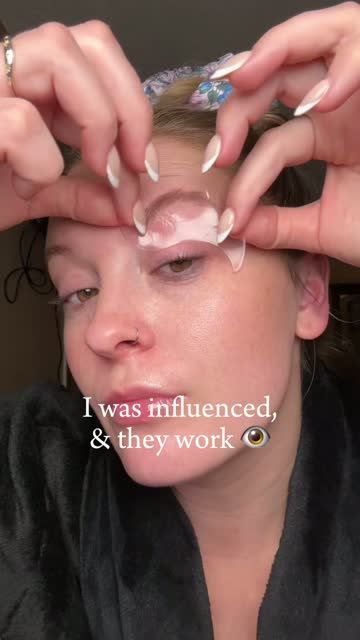
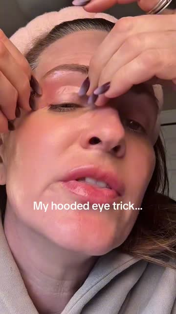
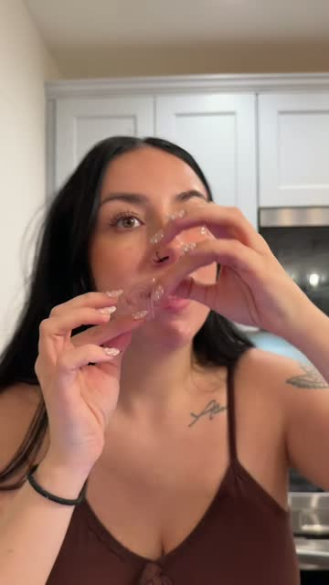
高卖视频不是先背成分，而是先让人看见 bags、texture、hooded eye、morning puffiness 这种具体烦恼。
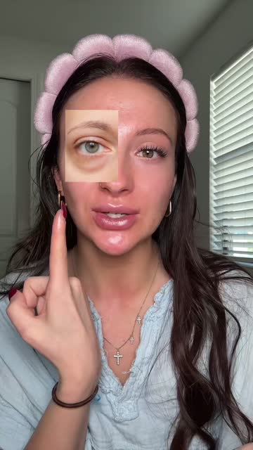
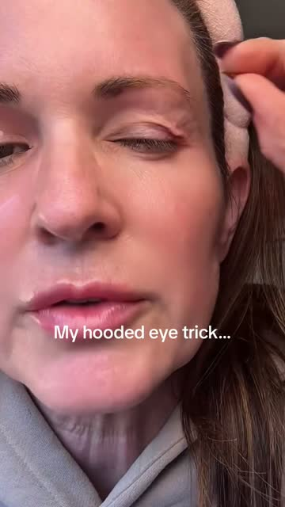
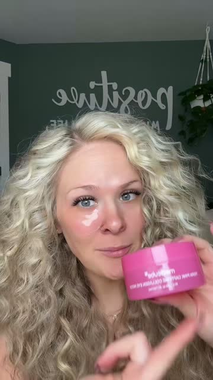
这类动作虽然没有前几类多，但一旦出现就很值钱，因为它直接在拆评论区最真实的担心。
结果不能只靠嘴说。高卖视频会直接给 before、拿掉以后、或者现在看起来更平更亮的画面。
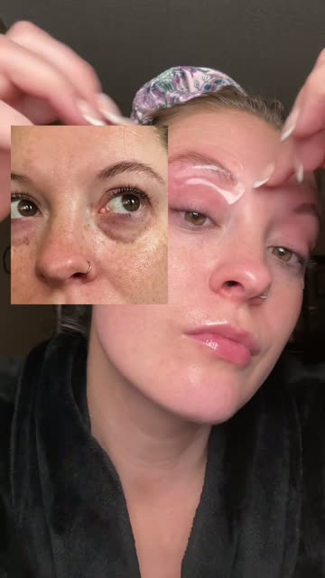
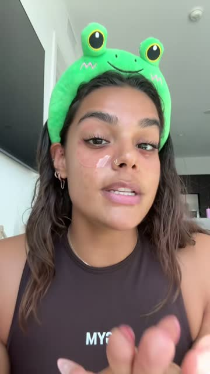
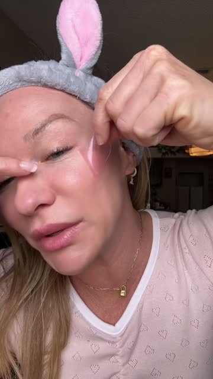
这组不是在卖抽象保养，而是在卖一个很具体的眼周问题解法。先点 bags / texture / dark circles / morning puffiness，再马上把 patch 放到一个明确位置，viewer 很快就知道这不是普通湿贴片。
Why is it anyone wearing these have eye bags or textures around their eye area?
用眉上贴法和 before 图把问题和结果一下子钉死。
I don't have to cut these in half anymore and put them under my eyes.
先把旧 hack 拿出来，再让 dedicated eye patch 显得更顺手、更像正解。
Have you ever seen eye patches that are this juicy?
保留问题切口，但把罐子里的很润质地拉成主证明。
这组不是从零开始教人这个牌子是谁，而是在用 Medicube 已经有的信任。开头最重要的不是解释，而是让人觉得：新品真的来了，而且看起来很润、很新、很值得马上试。
Medicube finally gave us under eye patches...
lid 倒回 jar 的 gooey motion 和湿润音感，先把 stop power 做起来。
Add to cart. You're gonna wanna add to cart before they sell out.
把 new drop 和 sell-out pressure 做成最短路径的成交版本。
Medicube finally dropped their PDRN eye patches that everyone's been waiting for.
保留 finally dropped，但更早把 cooling feel 和 bundle 机会拉进来。
这组不是在卖一张眼贴，而是在卖一个你可以马上照着做的方法。位置、顺序、能不能贴住，这些讲清楚以后，人会更容易觉得这是个真办法。
If you aren't pairing your eye masks with your eye cream, you're doing yourself a disservice.
把 bundle 讲成 correct method，而不是硬加购。
Really not feeling like going in and having it cut out quite yet.
把 hooded eye 和 surgery alternative 拍得很具体，位置感最强。
Oh my gosh. Medicube just released PDRN Pink Caffeine Eye Pads. Look at all that serum goodness.
除了 under-eye，还把 smile lines 一起拉进可用位置。
这条最值钱的，不是贴眉毛本身，而是它先把问题说具体，再把结果拍出来。
眼下 tired、浮肿、纹理明显，已经在找更对办法，但不想听太长解释的人。
一定要保留异常贴法、before 图和 `ones that actually work` 这种感觉。不要把它磨成普通 depuff 广告。
| 时间 | 这一段发生了什么 | 这一段为什么能卖 |
|---|---|---|
|
眉上 + 眼下的异常贴法
动作 / 视觉 Creator applies pink patches to eyebrows and under-eyes. 屏幕文字 I was influenced, & they work 👁️ 原句口播 Why is it anyone wearing these have eye bags or textures around their eye area? 声音 Voiceover |
这条 hook 真正做的是 pattern interrupt，不是单纯一句问题句。
异常贴法让 viewer 立刻停住，再用具体问题把产品从 generic eye mask 拉进 targeted fix。
|
|
|
before 图把痛点落地
动作 / 视觉 A 'before' photo appears as an inset showing tired eyes with texture. 屏幕文字 I was influenced, & they work 👁️ 原句口播 These are what my eyes look like in the morning about 6 months ago. 声音 Voiceover |
这一步不是 social proof 装饰，而是把问题可视化。
没有 before 图，这条就只剩 unusual placement；有了 before 图，viewer 才知道她在解决什么。
|
|
|
成分 trio 要早，但不能独立存在
动作 / 视觉 Shows the Medicube tub and the slimy texture of the patches inside. 屏幕文字 medicube PDRN PINK CAFFEINE COLLAGEN EYE PATCH 原句口播 These Korean skincare eye patches by medicube are packed full of PDRN, collagen and caffeine. It's gonna be great for brightening, tightening and depuffing. 声音 Voiceover |
这里不是 science lecture，而是成分 authority 搭着 texture proof 一起工作。
观众并不是因为听懂 PDRN 才买，而是因为她边说 ingredients 边让你看到 product quality。
|
|
|
quantity / value / category close
动作 / 视觉 Creator peels off the patches and shows the quantity in the tub, then shows glowing skin. 屏幕文字 — 原句口播 You get 60 in a pack... if you've been on the hunt for ones that actually work, I'll have these ones down below for you. 声音 Voiceover |
这不是 generic CTA，而是在收 quantity、value 和 category replacement。
她最后不是说‘快买’，而是把 viewer 从找眼贴的人，推到找真正有效眼贴的人。
|
这条最值钱的，不是讲抗老道理，而是把新品来了和很润的质地压在同一屏里。
已经知道 Medicube，也愿意为更认真眼周护理花钱的人。
一定要保留 gooey motion、湿润声音、新品刚出这层感觉。不要把它磨成普通新品开箱。
| 时间 | 这一段发生了什么 | 这一段为什么能卖 |
|---|---|---|
|
产品一开始就必须近、湿、好看
动作 / 视觉 Pouring pink patches; extreme close-up. 屏幕文字 NEW Medicube PDRN Pink Caffeine Collagen Eye Patches 原句口播 Medicube finally gave us under eye patches, and these are soaked with PDRN and caffeine. 声音 Wet squishing sounds |
这是最典型的 `new drop + sensory stop power`。
如果只有 finally here，没有 gooey reveal，这条会明显弱很多；真正停住人的，是 finally 和 product texture 同时成立。
|
|
|
把它放进 anti-aging 语境里
动作 / 视觉 Applying patches to eyes and smile lines using a spatula. 屏幕文字 The first signs of aging... 原句口播 Our skin is the first place to show signs of aging. 声音 Voiceover |
这里不是单纯 tutorial，而是在告诉 viewer 为什么这个新品值得现在就关注。
她没有把它说成 luxury pampering，而是说成 daily anti-aging habit 的缺失拼图。
|
|
|
成分是 seriousness，不是主角
动作 / 视觉 Patch application continues while ingredient list stays on screen. 屏幕文字 Ingredient list 原句口播 The skincare that you use on a daily basis has a bigger impact than you think. 声音 Voiceover |
成分层在这里的工作，是建立 serious skincare 的气氛。
viewer 不一定会去验证每个 ingredient，但她会把这支视频读成‘这不是随便的 eye patch launch’。
|
|
|
Mature-skin trust 收口
动作 / 视觉 Holding the jar, showing the label clearly. 屏幕文字 — 原句口播 There's a reason why even the ladies in their 50s swear by medicube... I'm gonna drop the link for you right on this video. 声音 Voiceover |
最后收在 trust transfer，而不是 screaming CTA。
这类 brand-demand 视频更适合用成熟肤龄信任去收，不适合太硬的转化语气。
|
它不是在硬卖套组，而是在教一个更对的做法，所以人不容易反感加购。
已经有护肤习惯，也愿意为了更对做法多买一步的人。
一定要保留 negative hook、base layer、不会滑和最后结果。不要一上来就写成 bundle 广告。
| 时间 | 这一段发生了什么 | 这一段为什么能卖 |
|---|---|---|
|
negative hook + immediate visual correction
动作 / 视觉 Applying patch over pink cream dots. 屏幕文字 You're probably doing this wrong with your eye masks 原句口播 If you aren't pairing your eye masks with your eye cream, you're doing yourself a disservice. 声音 Direct spoken voiceover |
这一条 hook 成功，不是因为否定感本身，而是因为更正动作已经同步发生。
viewer 不只是被 challenge 到，还会觉得自己立刻学到一个更强的使用方法。
|
|
|
先搭方法，再提 bundle
动作 / 视觉 Holding jars, then applying thick eye cream to the under-eye. 屏幕文字 — 原句口播 Medicube just launched these... It pairs perfectly with the PDRN Peptide Eye Cream. We're gonna apply that first. 声音 Spoken voiceover |
这段最重要的是顺序：先让 viewer 看懂 method，再让 bundle 看起来合理。
如果先讲 bundle deal，她会像卖货；先讲 base layer，她更像在教你怎么做对。
|
|
|
解决 usage friction
动作 / 视觉 Applying patch over the cream and smoothing it into place. 屏幕文字 — 原句口播 These ones are not gonna slide down your face. We're gonna seal that eye cream in... 声音 Spoken voiceover |
这一步在处理评论区最真实的 friction：会不会滑、到底怎么搭。
她不是在空讲 penetration，而是在用动作把 usage uncertainty 拆掉。
|
|
|
立即结果 + 39 岁的可代入性
动作 / 视觉 Removing patch to show glowing under-eye skin. 屏幕文字 — 原句口播 It's been about 20 minutes... as soon as I turned 39, the crows feet started crows feeding. 声音 Spoken voiceover |
这段的工作，是把 duo logic 变成一个更可信的成熟问题解法。
结果展示让 method 看起来不是理论，年龄自述则让 viewer 知道它在和谁说话。
|
这条最值钱的，是把 eye patch 拍成一个很具体的贴法，而不是普通抗老品。
对 hooded eye、上眼皮松、妆前提拉更敏感的人。
一定要保留 hooded eye 这个问题、上下都贴和 10 分钟这层做法。不要把它磨成普通提亮广告。
| 时间 | 这一段发生了什么 | 这一段为什么能卖 |
|---|---|---|
|
high-stakes pain point
动作 / 视觉 Creator pulls her eyelid skin toward her eyebrow. 屏幕文字 My hooded eye trick... 原句口播 Really not feeling like going in and having it cut out quite yet. 声音 Spoken voice |
这条 hook 直接把 stakes 提高了，所以 viewer 会更想看接下来这个 trick 到底是什么。
她没有先说 benefit，而是先说一个更刺痛的问题和更重的替代方案。
|
|
|
方法价值来自 placement
动作 / 视觉 Creator applies pink patches to the top and bottom of her right eye. 屏幕文字 My hooded eye trick... 原句口播 I do this before I put my makeup on. I take a eye patch that has caffeine in it. Put one on the top, I put one on the bottom. 声音 Spoken voice |
最值钱的不是 caffeine 这个词，而是上下一起贴这个 placement demo。
viewer 终于知道它不是普通 under-eye patch，而是一种更具体的 method。
|
|
|
新 drop 被讲成方法的一部分
动作 / 视觉 Creator holds jar close, then taps patches into place while talking about morning/night and eye cream. 屏幕文字 My hooded eye trick... 原句口播 These are actually brand new from medicube... I use them in the morning and the night. At night, I usually just put them under my eye, and I put my retinol eye cream under it... 声音 Subtle jar handling sound |
这里 new drop 的工作，不是 hype，而是让 viewer 觉得她找到了更适合这个问题的工具。
brand new、morning/night、eye cream synergy 全都在服务一个更具体的 mature-eye method。
|
|
|
tightening 结果要落到可执行 routine
动作 / 视觉 Creator points to her eye area with patches still on and explains what the trick does. 屏幕文字 My hooded eye trick... 原句口播 Just leave these on for about 10 minutes, and it really tightens up my skin... 声音 Spoken voice |
最后不是把 viewer 推到抽象抗老，而是推到一个很清楚的 10-minute trick。
她把眼贴的价值，锁在妆前提拉和上眼皮 tightening 这个具体回报上。
|
先看共同规律，再看不同方向最值钱的开头、中段证明和结尾。这里不是重写，而是先定主控，再决定下一轮只改哪一块。
第一秒站不住，后面再好也没人看到。
画面、口播、屏幕字和贴法一起工作，才更容易停住人。
最稳的是拍到 patch、jar、serum、不会滑，不是空讲好处。
早上用、贴多久、套组顺序、库存和链接，这些才是在压低下单门槛。
先用具体眼周问题和异常贴法停住人，再用 before 图和 targeted placement 把问题钉死。
先看 placement 的戏剧性和问题句是不是够具体。
最稳的是 before / results framing，不是成分教育。
quantity、value 和 `actually work` 的 category replacement 收转化。
先测 hook 的具体痛点和异常贴法，不先改中后段。
new drop 本身不够，真正做销售的是 gooey reveal、wet sound 和 Medicube 既有 demand 的叠加。
先看 jar motion / patch texture 能不能在 5 秒内把质感做出来。
最稳的是 anti-aging frame + ingredient seriousness，但不需要讲太深。
用 mature-skin trust 收，不用太硬的 CTA。
先测 sensory reveal 跟 finally here 谁更前，不先加更多话。
它用最短路径把新品和 scarcity 接起来，适合活动期或强转化窗口。
先看命令式 CTA 和产品怼脸有没有一起发生。
中段不宜太长，只要补一个最小 benefit 就够。
sell out 语境比长 education 更重要。
先测 CTA 强度，再测是否加一个 quick-use reason。
这条把 bundle 讲成更对的做法，所以 viewer 更愿意接受 higher intent 的 routine logic。
先看 doing-it-wrong 和 base layer visual 是否同步出现。
最稳的是 no-slip、seal-in、step order。
结果 reveal 和年龄代入比硬 CTA 更重要。
先测 negative hook wording 和 no-slip proof 的位置。
把问题切口借给新品视频：保留 finally here，但第一句直接点具体眼周问题。
把很润的质地借给方法视频：base layer 前面先上一下 gooey / juicy 的证明。
同一个具体问题方向，换第一层证明：一版先上 before 图，一版先上不会滑。
同一个主控，换人群：一版 broad under-eye，一版 mature concern / upper-lid。
先把问题拍具体，再让人知道这片就是来治这个的。
| 步骤 | 这一块负责什么 | 尽量别动的 | 可以换的变量 | 真实句子 / 真实做法 |
|---|---|---|---|---|
| Block 1 | 第一秒停住人 | 具体问题 + 非常规或明确 placement | bags / texture / dark circles / morning puffiness | 问题越具体越好，别退回 generic anti-aging |
| Block 2 | 立刻 show product | jar / patch / before 图很早出现 | before 图、quantity、jar tilt 谁先上 | viewer 不该猜这个产品长什么样 |
| Block 3 | 站住 seriousness | ingredient trio 要早，但不能变 lecture | brighten / tighten / depuff 的排列 | 成分是 support，不是主角 |
| Block 4 | 把购买理由收顺 | value / quantity / actually works | CTA 强度、price/value wording | 最后收 category replacement，不收空泛 hype |
先让人感觉 Medicube 终于补上了这个品，再用质地把新品拍得更值钱。
| 步骤 | 这一块负责什么 | 尽量别动的 | 可以换的变量 | 真实句子 / 真实做法 |
|---|---|---|---|---|
| Block 1 | 宣布新品来了 | finally / brand new / just launched | finally here、add to cart、we've been waiting | 品牌 demand 要保留，不要磨平 |
| Block 2 | 靠质地停人 | gooey reveal / single patch close-up | jar pour-back、jar tilt、single patch close-up | new drop 需要 texture 才站得住 |
| Block 3 | 让它看起来 serious | ingredient seriousness + anti-aging frame | mature-skin trust、clinical-backed、refresh/cooling | 不要在这里展开 science 争论 |
| Block 4 | 把下单推一把 | sell out / link below / first to get it | scarcity 强度、coupon / stock phrasing | 如果要更硬转，先补 usage clarity |
把 patch 从单品变成一个方法，让人看懂怎么用、为什么这样用。
| 步骤 | 这一块负责什么 | 尽量别动的 | 可以换的变量 | 真实句子 / 真实做法 |
|---|---|---|---|---|
| Block 1 | 挑战现有做法 | doing it wrong / hooded eye / old hack | negative hook wording、pain point stakes | 先让 viewer 感觉现在的方法不够对 |
| Block 2 | 位置演出来 | upper lid / lower lid / smile lines / cream first | placement 组合、duo 顺序 | 方法视频不能只有嘴，必须有动作 |
| Block 3 | 解决真实 friction | no-slip / seal in / 10-20 minutes | tightening、cooling、morning/night | 评论里的 how-to 必须在视频里被拆掉 |
| Block 4 | 把结果落到 routine | before makeup / consistency / mature concern | crows feet、hooded eye、dark circles | 不要让 bundle 逻辑吃掉 broad control |
这一块不再往外扩分析，只收成下游真正要用的东西：先写哪一类、真实担心点是什么、哪些一定要留、哪些别碰。